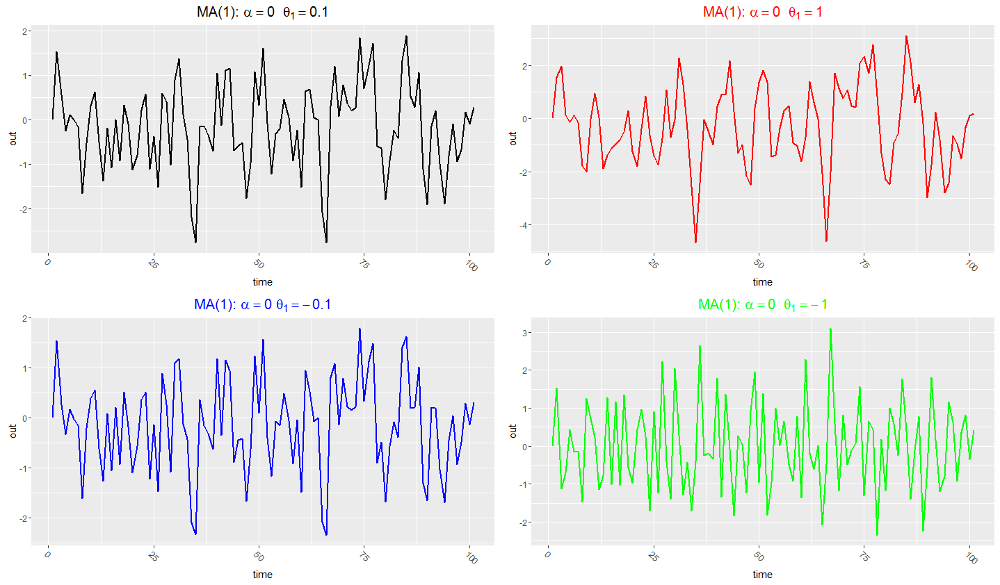
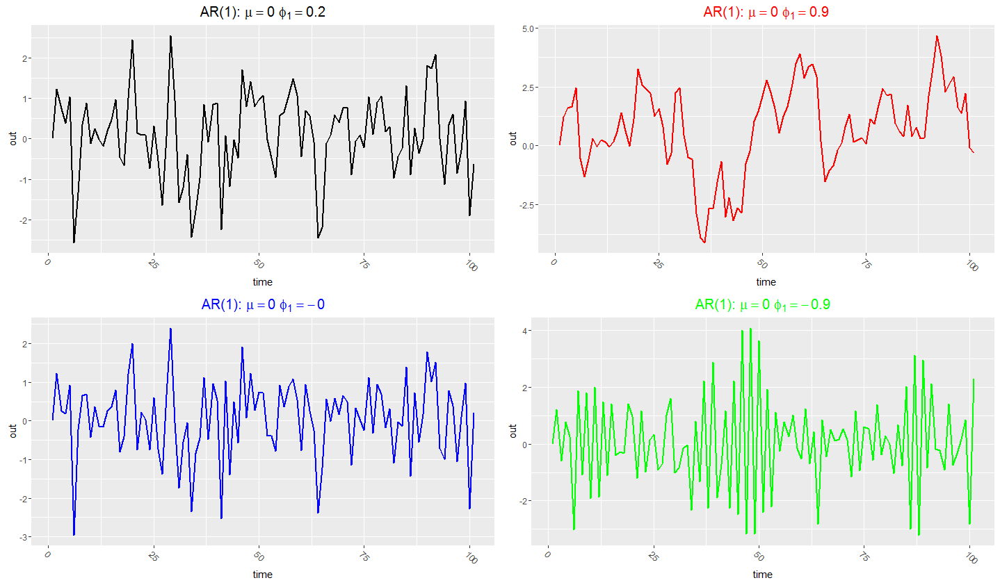
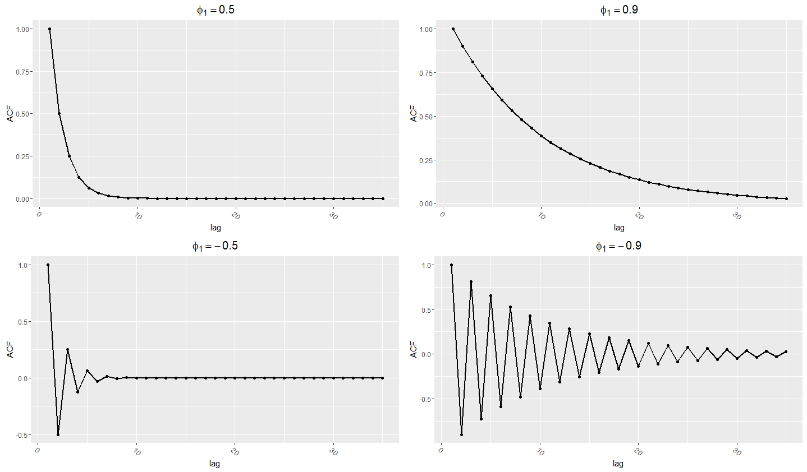
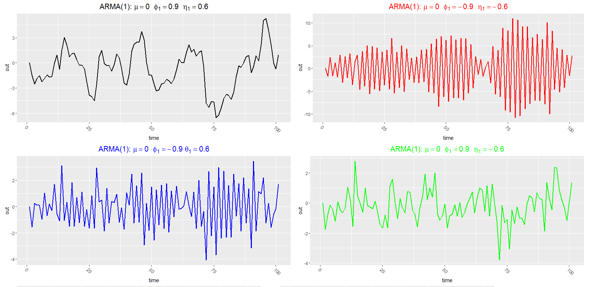
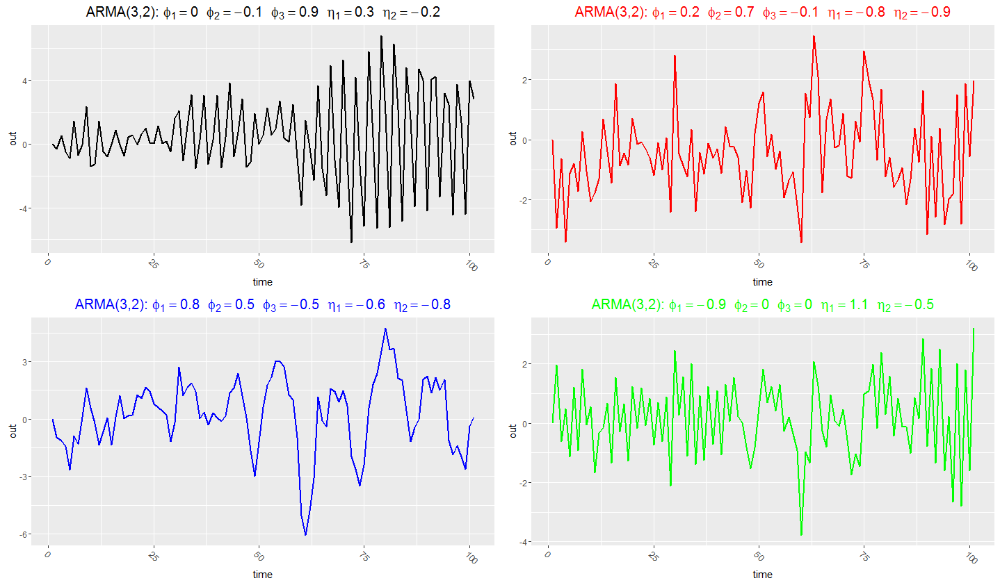

AR, MA and ARMA models are different ways of building memory into a time series. MA models remember past shocks, AR models remember past values, and ARMA models combine both. The lecture-note intuition is that the dependence comes from common shocks and from the way past values carry those shocks forward.
Stuck on AR, MA or ARMA models?
Send the lecture topic list, problem set and any software output. The diagnostic can identify whether the difficulty is notation, stationarity, ACF intuition or estimation.
Where these models fit
The first notes defined white noise, stationarity and autocorrelation. This note explains simple processes that generate autocorrelation in controlled ways.
The aim is not just to memorise formulas. The aim is to see how a model creates time dependence: by letting current values share shocks with past values, or by letting past values directly enter the current equation.
1. MA(1): a weighted average of current and previous shocks
The simplest moving-average model is:
The word “moving average” means that the series is a weighted moving average of shocks. At time \(t\), the process depends on the current shock and the previous shock. The coefficient \(θ_1\) tells us how much the previous shock still matters.

Changing \(θ_1\) changes how the previous shock enters the current value.If \(Y_t\) were GDP, \(ε_t\) could be read as the shock to GDP at time \(t\). An MA(1) lets the shock affect GDP now and one period later, but not forever.
Why is an MA(1) correlated with its immediate past? Write the neighbouring observations:
Yt−1 = α + εt−1 + θ1εt−2
Both contain the common shock \(ε_{t-1}\). That shared shock creates covariance between \(Y_t\) and \(Y_{t-1}\). But \(Y_t\) and \(Y_{t-2}\) share no common shock, so the autocovariance is zero after lag 1.
2. MA(1) mean, variance and autocorrelation
Using the white-noise assumptions, the MA(1) has:
The key interpretation is that an MA(1) has short memory. Its ACF cuts off after lag 1. This is why the correlogram can help identify MA-type behaviour.
The sign of \(θ_1\) determines the sign of the lag-1 autocorrelation. If \(θ_1>0\), the common shock pushes neighbouring observations in the same direction. If \(θ_1<0\), it pushes them in opposite directions, giving oscillation.
3. MA(q): shocks can matter for q periods
The MA(q) model generalises the same idea:
An MA(q) is correlated with at most \(q\) lags of itself. The reason is the same common-shock logic: observations close enough together can share shocks; observations more than \(q\) periods apart cannot.
For an MA(q), the theoretical ACF cuts off after lag \(q\). That is why a sample correlogram with a sharp cut-off can suggest a moving-average model.
4. AR(1): the current value depends on the previous value
The AR(1) model is:
This is different from MA(1). Instead of depending directly on a previous shock, \(Y_t\) depends on the previous value \(Y_{t-1}\). But that previous value already contains earlier shocks. So a shock can be carried forward indirectly through the series.

AR(1) processes show persistence because each value partly carries forward the previous value.Substituting backwards gives the intuition:
So \(Y_t\) depends on \(Y_{t-2}\), then \(Y_{t-3}\), and so on, but with powers of \(φ_1\). If \(|φ_1|<1\), those powers shrink and the effect of old shocks dies away.
5. AR(1) stationarity and ACF
The stationary AR(1) has:
The stationarity condition is \(|φ_1|<1\). This says the influence of past shocks must eventually fade. If \(φ_1\) is close to one, the process is highly persistent. If \(φ_1\) is negative, the autocorrelation alternates in sign.

The AR(1) ACF tails off geometrically rather than cutting off.This is the crucial contrast with MA models. MA(q) autocorrelation cuts off. AR(1) autocorrelation tails off. A correlogram with a gradual decline is therefore often read as AR-like.
6. ARMA(1,1): combining lagged values and lagged shocks
The ARMA(1,1) model combines the two mechanisms:
This is more flexible than either AR(1) or MA(1). If \(θ_1=0\), it becomes AR(1). If \(φ_1=0\), it becomes MA(1). With both parameters present, the model captures both persistence from past values and short-run shock effects.

ARMA(1,1) combines AR persistence with MA shock dependence.The ACF usually tails off rather than cutting off, but its early-lag shape can be affected by the MA parameter. This is why ARMA correlograms can be harder to identify visually than pure AR or pure MA models.
7. AR(p) and ARMA(p,q)
The general AR(p) model is:
The general ARMA(p,q) model is:
The notation is simple once the intuition is clear: \(p\) counts lagged values of \(Y\), and \(q\) counts lagged shocks. The advanced note explains the lag operator and stationarity root conditions used to analyse these general processes.

A higher-order ARMA process can create more complex dependence patterns.8. Summary table: how each model remembers the past
| Model | What creates memory? | ACF pattern | Practical clue |
|---|---|---|---|
| White noise | No memory. | Zero autocorrelation at all positive lags. | Sample ACF should stay near zero. |
| MA(q) | Shared shocks up to q periods apart. | Cuts off after q. | Sharp cut-off in correlogram. |
| AR(p) | Past values carry shocks forward. | Tails off. | Gradual decay or oscillation. |
| ARMA(p,q) | Past values and past shocks. | Often tails off with flexible early-lag behaviour. | Use correlogram plus estimation and diagnostics. |
Next notes in this pathway
- How to read a correlogram: use these theoretical ACF ideas in data.
- Lag operator and stationarity roots: write ARMA models compactly.
- Estimation and model selection: choose and estimate ARMA models from data.
ARMA tuition
For help deriving ARMA moments, interpreting ACFs, or using ARMA models in exams or dissertations, see econometrics tuition or PhD econometrics support.
Companion videos: the Time Series Econometrics playlist on @economaths covers AR, MA and ARMA processes.